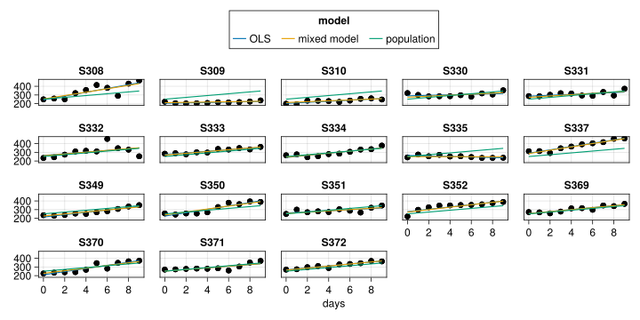
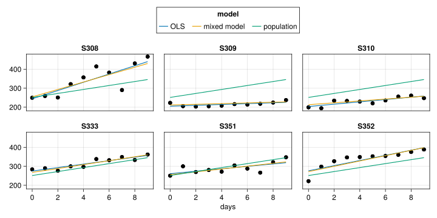

CairoMakie.Screen{IMAGE}Mixed models: why or why not?
(But probably why yes!)
Phillip M. Alday
Beacon Biosignals
The General Linear Model
Classical tests are all regression in disguise
- See more examples of this at: https://lindeloev.github.io/tests-as-linear/
- Two independent samples of 10 elements
- Both true variance of 1
- \(a\) has mean 0
- \(b\) has mean 1
t-test
Two sample t-test (equal variance)
----------------------------------
Population details:
parameter of interest: Mean difference
value under h_0: 0
point estimate: -1.12202
95% confidence interval: (-1.723, -0.5208)
Test summary:
outcome with 95% confidence: reject h_0
two-sided p-value: 0.0010
Details:
number of observations: [10,10]
t-statistic: -3.9206839147444157
degrees of freedom: 18
empirical standard error: 0.2861791307330337ANOVA
One-way analysis of variance (ANOVA) test
-----------------------------------------
Population details:
parameter of interest: Means
value under h_0: "all equal"
point estimate: NaN
Test summary:
outcome with 95% confidence: reject h_0
p-value: 0.0010
Details:
number of observations: [10, 10]
F statistic: 15.3718
degrees of freedom: (1, 18)Linear regression
treatment, i.e. dummy coding
─────────────────────────────────────────────────────────────────────────
Coef. Std. Error t Pr(>|t|) Lower 95% Upper 95%
─────────────────────────────────────────────────────────────────────────
(Intercept) -0.229102 0.202359 -1.13 0.2724 -0.654243 0.196039
x: b 1.12202 0.286179 3.92 0.0010 0.520778 1.72326
─────────────────────────────────────────────────────────────────────────F-test against the null model:
F-statistic: 15.37 on 20 observations and 1 degrees of freedom, p-value: 0.0010Linear regression
effects, i.e. sum coding
───────────────────────────────────────────────────────────────────────
Coef. Std. Error t Pr(>|t|) Lower 95% Upper 95%
───────────────────────────────────────────────────────────────────────
(Intercept) 0.331907 0.14309 2.32 0.0323 0.0312873 0.632527
x: b 0.561009 0.14309 3.92 0.0010 0.260389 0.861629
───────────────────────────────────────────────────────────────────────F-test against the null model:
F-statistic: 15.37 on 20 observations and 1 degrees of freedom, p-value: 0.0010Linear regression
full dummy coding, i.e. one-hot, i.e. dummy coding without an intercept
──────────────────────────────────────────────────────────────────
Coef. Std. Error t Pr(>|t|) Lower 95% Upper 95%
──────────────────────────────────────────────────────────────────
x: a -0.229102 0.202359 -1.13 0.2724 -0.654243 0.196039
x: b 0.892916 0.202359 4.41 0.0003 0.467775 1.31806
──────────────────────────────────────────────────────────────────What happens with more than 3+ groups?
- group \(c\) with true mean -1, true variance 1
CairoMakie.Screen{IMAGE}Linear regression
dummy coding
─────────────────────────────────────────────────────────────────────────
Coef. Std. Error t Pr(>|t|) Lower 95% Upper 95%
─────────────────────────────────────────────────────────────────────────
(Intercept) -0.229102 0.214824 -1.07 0.2957 -0.669883 0.21168
x: b 1.12202 0.303806 3.69 0.0010 0.498659 1.74538
x: c -0.184637 0.303806 -0.61 0.5484 -0.807997 0.438722
─────────────────────────────────────────────────────────────────────────F-test against the null model:
F-statistic: 10.84 on 30 observations and 2 degrees of freedom, p-value: 0.0004ANOVA
One-way analysis of variance (ANOVA) test
-----------------------------------------
Population details:
parameter of interest: Means
value under h_0: "all equal"
point estimate: NaN
Test summary:
outcome with 95% confidence: reject h_0
p-value: 0.0004
Details:
number of observations: [10, 10, 10]
F statistic: 10.8357
degrees of freedom: (2, 27)Explicit regression gives you more control than classical tests
- but also more responsibility!
- you can test distinct but related hypotheses
- you get explicit estimates of effect sizes
- you can customize different parts of the model to get variations
- mixture of continuous and categorical predictors (ANOVA + ANCOVA)
- control which interactions are present
- interactions are resolved as part of a single step: no post-hoc t-test necessary
- control over the ‘family’ / response distribution to model e.g. yes/no responses (binomial), counts (Poisson), etc.
- relationship of ANOVA tests and t-tests more explicit
- ANOVA is an omnibus test
- t-tests are individual contrasts
- more complicated tests are variations on model comparisons
- contrasts can be hard but…
- they are no harder than your research question
- explicit choice of contrasts and model comparison more informative than the types of sums of squares
- lack of balance not a problem
But what about repeated measures?
- Two dependent* samples of 10 elements
- Both true variance of 1
- \(a\) has mean 0
- \(b\) has mean 1
CairoMakie.Screen{IMAGE}
Paired samples t-test
One sample t-test
-----------------
Population details:
parameter of interest: Mean
value under h_0: 0
point estimate: -1.12202
95% confidence interval: (-1.674, -0.5705)
Test summary:
outcome with 95% confidence: reject h_0
two-sided p-value: 0.0013
Details:
number of observations: 10
t-statistic: -4.602356111250003
degrees of freedom: 9
empirical standard error: 0.24379206812308213One-sample t-test on the difference
One sample t-test
-----------------
Population details:
parameter of interest: Mean
value under h_0: 0
point estimate: -1.12202
95% confidence interval: (-1.674, -0.5705)
Test summary:
outcome with 95% confidence: reject h_0
two-sided p-value: 0.0013
Details:
number of observations: 10
t-statistic: -4.602356111250003
degrees of freedom: 9
empirical standard error: 0.24379206812308213Linear regression on the difference
| Coef. | Std. Error | t | Pr(> | t | ) | |
|---|---|---|---|---|---|---|
| (Intercept) | -1.12202 | 0.243792 | -4.60 | 0.0013 | -1.67351 | -0.570522 |
Pairwise differences are not easily generalizable
- what happens if we have 3+ groups? (rmANOVA ✔)
- what happens if our covariates change from one measurement to the next within groups? (rmANOVA ✔ between vs. within variables)
- what happens if we have more than 2 measurements per group? (rmANOVA ✔)
- what if some groups are missing one or more measurements? (rmANOVA ❓)
- what happens if there are multiple grouping variables? (rmANOVA ❌)
- what happens if the conditional distribution is not normal? (rmANOVA ❌)
Regression and repeated measures
Strategies with classical regression
within-groups regression
- aggregating within-group results may not propagate error correctly
- all groups treated equal
- unable to handle more complex grouping structures
- separate by-item and by-subject analyses as a potential stopgap
- no pooling of information between groups
ignore grouping structure or include group as covariate (complete pooling)
- violates independence assumption
- standard errors incorrect (too small)
- if group included as categorical variable, explosion in number of parameters
- more complicated to interpret
- lower power
- all observations treated equal
- complete pooling of information between groups
Mixed-effects Models
- can handle more complicated grouping structures
- can handle imbalance at all levels
- better group-level predictions
- can handle both between and within variables seemlessly
- partitioning of group vs. observation variance based on the evidence
- partial pooling of information between groups
Why mixed models?
Classic example dataset: sleepstudy
- reaction time study following \(x\) days of sleep restriction
- on average, we expect a worsening of reaction time over several days
- individuals may differ in baseline reaction time or worsening
Classic example dataset: sleepstudy
CairoMakie.Screen{IMAGE}
Classic example dataset: sleepstudy
CairoMakie.Screen{IMAGE}Paritioning between-within variance
| Est. | SE | z | p | σ_subj | |
|---|---|---|---|---|---|
| (Intercept) | 251.4051 | 6.6323 | 37.91 | <1e-99 | 23.7805 |
| days | 10.4673 | 1.5022 | 6.97 | <1e-11 | 5.7168 |
| Residual | 25.5918 |
Shrinkage and borrowing strength
Shrinkage and borrowing strength: most changed
Shrinkage and borrowing strength: moderately changed
Shrinkage and borrowing strength: least changed
Shrinkage and borrowing strength
Subject-level predictions
And many more reasons!
- Multiple levels: (partial) crossing and nesting
- Parsimony
- One unified framework
- Normal and non normal responses
- Mixture of categorical and continuous predictors
- Balance isnt’ an issue
- Explicit model:
- effect estimates
- easier to see impact of potential violations of assumptions
- much clearer distinction between signifance and explanatory power
Why not mixed models?
(what you need to watch out for when moving to mixed models)
Contrast coding
- Hinted at earlier, but contrast coding requires thinking rather explicitly about your actual hypotheses beyond “there is a difference somewhere”
- Results in the literature are not interpretable without knowing the contrast scheme used (Brehm and Alday 2022)
- Same problem existed historically for ANOVA – results are no interpretable without knowing whether Type I, II, or III sums of squares were used
- Good tutorial in R: Schad et al. (2020)
Random-effects selection
Convergence, compute time and the computational vs. statistical problems
- Unlike classical tests and OLS regression, which are based on direct computations, mixed models require a more complicated fitting process
- This can break down in various ways
- This can take substantially longer than ANOVA
- Breakdowns of the fitting process can often be solved by better understanding the warnings and the deeper meaning of statistics in question
- Overly cautious warnings in some software (e.g. lme4) have often been intepreted as a failure in software instead of a statement about the statistical problem (see also https://rpubs.com/palday/lme4-singular-convergence)
- Folk Theorem of Statistical Computing (Gelman): When you have computational problems, often there’s a problem with your model
Breakdown of some overly simple definitions from introductory statistics
- “degrees of freedom” no longer a trivial concept
- p-values often depend on degrees of freedom, so they are now more difficult
- largely averted by using confidence intervals (see also Cumming 2014)
- \(R^2\) and standardized effect sizes are also more challenging, see e.g. these links.
References
Baayen, R. H., D. J. Davidson, and D. M. Bates. 2008. “Mixed-Effects Modeling with Crossed Random Effects for Subjects and Items.” Journal of Memory and Language, Special Issue: Emerging Data Analysis, 59 (4): 390–412. https://doi.org/10.1016/j.jml.2007.12.005.
Bates, Bates, Douglas M. 2019. “Complexity in Fitting Linear Mixed Models.” Nextjournal, August. https://doi.org/10.33016/nextjournal.100002.
Bates, Douglas, Reinhold Kliegl, Shravan Vasishth, and Harald Baayen. 2018. “Parsimonious Mixed Models.” arXiv:1506.04967 [Stat], May. http://arxiv.org/abs/1506.04967.
Brehm, Laurel, and Phillip M. Alday. 2022. “Contrast Coding Choices in a Decade of Mixed Models.” Journal of Memory and Language 125 (August): 104334. https://doi.org/10.1016/j.jml.2022.104334.
Cumming, Geoff. 2014. “The New Statistics: Why and How.” Psychological Science 25 (1): 7–29. https://doi.org/10.1177/0956797613504966.
Matuschek, Hannes, Reinhold Kliegl, Shravan Vasishth, Harald Baayen, and Douglas Bates. 2017. “Balancing Type I Error and Power in Linear Mixed Models.” Journal of Memory and Language 94 (June): 305–15. https://doi.org/10.1016/j.jml.2017.01.001.
Schad, Daniel J., Shravan Vasishth, Sven Hohenstein, and Reinhold Kliegl. 2020. “How to Capitalize on a Priori Contrasts in Linear (Mixed) Models: A Tutorial.” Journal of Memory and Language 110 (February): 104038. https://doi.org/10.1016/j.jml.2019.104038.